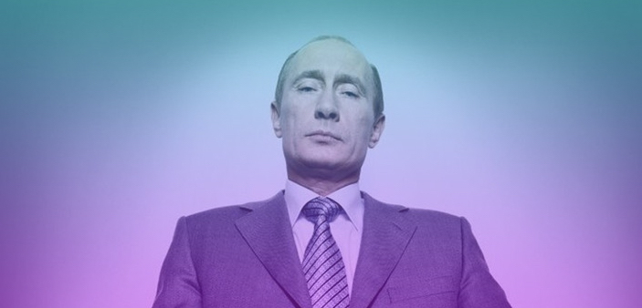

Путин Владимир Владимирович
Pоссийский государственный деятель, действующий президент Российской Федерации с 7 мая 2012 года. С 2000 по 2008 год — второй президент Российской Федерации. В 1999—2000 годах и с 2008 по 2012 годы — председатель Правительства Российской Федерации. Занимал посты директора Федеральной службы безопасности с 1998 по 1999 год, секретаря Совета безопасности РФ в 1999 году.
Выпускник юридического факультета Ленинградского государственного университета. С 1977 года работал по линии контрразведки в следственном отделе Ленинградского управления КГБ. С 1985 по 1990 год служил в резидентуре советской внешней разведки в ГДР, работал в Дрездене под прикрытием в должности директора дрезденского Дома дружбы СССР—ГДР. 20 августа 1991 года в звании подполковника уволился из КГБ СССР. В 1991—1996 годах работал помощником ректора ЛГУ по международным вопросам, возглавлял Комитет по внешним связям мэрии Ленинграда, был советником мэра, первым заместителем председателя правительства Санкт-Петербурга. С августа 1996 года начал работать в Москве в должности заместителя управляющего делами Президента Российской Федерации. После недолгого пребывания во главе ФСБ и на посту секретаря Совета безопасности РФ в августе 1999 года был назначен председателем Правительства России.
Первым лицом государства стал 31 декабря 1999 года, когда по решению президента Российской Федерации Бориса Ельцина был назначен исполняющим обязанности президента Российской Федерации — в связи с уходом первого президента РФ в досрочную отставку. Впервые избран президентом Российской Федерации 26 марта 2000 года. Переизбирался на пост главы государства в 2004 и 2012 годах.
Полковник госбезопасности запаса (1999). Действительный государственный советник Российской Федерации 1 класса (1997). Кандидат экономических наук (1997). Мастер спорта по дзюдо и самбо, чемпион Ленинграда по дзюдо (1976), заслуженный тренер России по самбо (1998). Свободно владеет немецким языком.
Биография (до августа 1999 года)
Происхождение
Согласно собственному ответу во время переписи населения, русский по национальной принадлежности.
Отец Владимира Путина — Владимир Спиридонович Путин (23.2.1911 — 2.8.1999). До войны (с 1933 по 1934 год) служил на подводном флоте. Участник Великой Отечественной войны. Призван Петергофским РВК Ленинградской области. В РККА — с июня 1941, боец 330-го стрелкового полка 86-й дивизии Красной армии. Защищая Невский пятачок, был тяжело ранен осколком в левую голень и стопу 17 ноября 1941 года. Награждён медалями: «За боевые заслуги», «За оборону Ленинграда», «За победу над Германией». Член ВКП(б) с 1941 года. После войны — мастер на заводе им. Егорова. В 1985 году награждён орденом Отечественной войны 1-й степени. Мать, Мария Ивановна Шеломова (1911—1998), также работала на заводе, пережила блокаду Ленинграда. Штабом КБФ награждена медалью «За оборону Ленинграда».
Дед, Спиридон Иванович Путин, был известным поваром, готовившим для высших партийных и государственных чинов; ему приходилось готовить для Ленина и Сталина. Предки В. В. Путина по отцовской и материнской линии (Путины, Шеломовы, Чурсановы, Буяновы, Фомины и другие) на протяжении, по меньшей мере, 300 лет были крестьянами Тверского уезда. Наиболее ранний известный предок В. В. Путина упомянут в 1627/1628 годах в писцовой книге Тверского уезда. Это Яков Никитин — бобыль деревни Бородино прихода села Тургиново, вотчины боярина Ивана Никитича Романова, дяди царя Михаила Фёдоровича.
Детство и юность
Родился 7 октября 1952 года в Ленинграде. Владимир был третьим сыном в семье — у него было два старших брата, которые родились и умерли до его рождения: Виктор (1940—1942) и Альберт (умер до начала Великой Отечественной войны). Виктор скончался от дифтерии во время блокады Ленинграда и был похоронен на Пискарёвском кладбище.
Семья Путиных жила в коммунальной квартире без всяких удобств в Басковом переулке (дом 12) в Ленинграде, в этой квартире Путин проживал вплоть до работы в КГБ СССР. Уже став президентом, Путин рассказывал, что с детства увлекался советскими фильмами о разведчиках и мечтал работать в органах государственной безопасности. С признательностью отзывался о возможностях для становления и развития, которые в те годы предоставляла молодому человеку советская власть.
В 1960—1965 годах Владимир Путин учился в школе-восьмилетке № 193. После поступил в среднюю школу № 281 (спецшкола с химическим уклоном на базе Технологического института), которую он окончил в 1970 году.
В 1970—1975 годах учился на международном отделении юридического факультета Ленинградского государственного университета (ЛГУ). В ЛГУ вступил в КПСС. Из этой партии не выходил. Во время учёбы впервые встретил Анатолия Собчака, в то время доцента ЛГУ. Тема диплома — «Принцип наиболее благоприятствуемой нации» (научный руководитель Л. Н. Галенская, кафедра международного права).
Служба в КГБ
В 1975 году окончил юридический факультет ЛГУ. По распределению был направлен на работу в Комитет государственной безопасности. В 1975 году окончил «Курсы подготовки оперативного состава» на Охте («401-я школа»), аттестован младшим офицером (старший лейтенант юстиции) в системе территориальных органов КГБ СССР.
После 1977 года работал по линии контрразведки в следственном отделе Ленинградского управления КГБ. В 1979 году закончил обучение на шестимесячных курсах переподготовки в Высшей школе КГБ в Москве и снова вернулся в Ленинград.
В 1984 году, в звании майора юстиции, откомандирован на обучение на одногодичный факультет Краснознамённого института им. Ю. В. Андропова КГБ СССР, который окончил в 1985 году по специальности «Внешняя разведка». В КИ КГБ СССР носил «школьную» фамилию Платов, был старостой учебного отделения, изучал немецкий язык.
В 1985—1990 годах работал в ГДР. Проходил службу в территориальной разведточке в Дрездене под прикрытием должности директора дрезденского Дома дружбы СССР—ГДР. В течение командировки по выслуге лет повышен в звании до подполковника и в должности до старшего помощника начальника отдела. В 1989 году был награждён бронзовой медалью «За заслуги перед Национальной народной армией ГДР». В 1990 году, во время массовых акций, предотвратил разгром демонстрантами территориального подразделения КГБ в Дрездене.
После окончания загранкомандировки и возвращения в СССР, по словам Путина, добровольно отказался от перехода в центральный аппарат внешней разведки КГБ СССР в Москве. Снова вернулся в штат первого отдела (разведка с территории СССР) Ленинградского управления КГБ.
По словам Путина, после перехода на работу в мэрию Ленинграда он дважды подавал рапорт на увольнение из органов КГБ СССР. 20 августа 1991 года, во время выступления А. А. Собчака против ГКЧП, подполковник (по другим данным — майор юстиции; воинское звание подполковник было присвоено при зачислении в запас) Путин написал рапорт об увольнении из КГБ.
Работа в Санкт-Петербурге
С начала весны 1990 года основным официальным местом его работы был Ленинградский государственный университет (ЛГУ) (бывший им. А. А. Жданова). В ЛГУ Путин стал помощником ректора Станислава Меркурьева по международным вопросам.
Меркурьев позже рекомендовал Анатолию Собчаку Путина как исполнительного работника.
С мая 1990 года — советник председателя Ленинградского городского Совета народных депутатов Собчака.
С 12 июня 1991 года, после избрания А. А. Собчака на пост мэра, — председатель комитета по внешним связям мэрии Ленинграда (с 16 мая 1992 года — Санкт-Петербурга). В круг обязанностей Путина на посту руководителя комитета входили вопросы привлечения инвестиций в Петербург, сотрудничества с иностранными компаниями, организации совместных предприятий, а также развитие туризма и контроль над игорным бизнесом. Путин был куратором организации первой валютной биржи в Санкт-Петербурге и способствовал приходу в город нескольких крупных немецких фирм. При участии Путина был открыт один из первых банков с зарубежным капиталом в России — BNP-Drezdner Bank (Rossija). Путин являлся одним из организаторов российско-американских «Игр доброй воли», тогда же он познакомился с крупным американским бизнесменом в сфере средств массовой информации Тедом Тёрнером. Начиная с этого времени, американские спецслужбы начали собирать информацию о Путине.
С 1993 года глава города Собчак на время своих зарубежных поездок стал оставлять Путина заместителем вместо себя.
В марте 1994 года был назначен первым заместителем председателя правительства Санкт-Петербурга, сохранив за собой должность руководителя комитета по внешним связям. В обязанности Путина как зампреда петербургского правительства входили координация работы и взаимодействие мэрии с территориальными органами силовых и правоохранительных ведомств (ГУВД, Минобороны России, ФСБ России, прокуратура, суды, Таможенный комитет), а также политическими и общественными организациями. В ведении Путина находились регистрационная палата, а также управления мэрии: юстиции, по связям с общественностью, административных органов, гостиниц.
В 1995 году возглавил региональное отделение партии НДР.
Помимо комитета по внешним связям, Путин руководил комиссией мэрии по оперативным вопросам. В 1992—1996 годах Путин в числе «реформистски настроенных политических активистов» проходил тренинг по программе американского Национального демократического института международных отношений (National Democratic Institute for International Affairs, NDI). Работавший тогда консультантом NDI в Москве, будущий посол США в России Майкл Макфол охарактеризовал в 2001 году Путина как «потенциального „российского Милошевича“», избрание которого президентом России не является позитивным шагом для интересов США".
Впоследствии многие из тех, кто вместе с Путиным работал в мэрии Санкт-Петербурга (И. И. Сечин, Д. А. Медведев, В. А. Зубков, А. Л. Кудрин, А. Б. Миллер, Г. О. Греф, Д. Н. Козак, В. П. Иванов, С. Е. Нарышкин, В. Л. Мутко и др.), в 2000-е годы заняли ответственные посты в правительстве России, администрации президента России и руководстве госкомпаний.
В 1992 году депутатской рабочей группой Ленсовета во главе с Мариной Салье и Юрием Гладковым (так называемой «комиссией Салье») против Путина как руководителя комитета по внешнеэкономическим связям было выдвинуто обвинение в махинациях в связи с программой снабжения Санкт-Петербурга продовольствием в обмен на сырьё. По утверждению самого Путина, фактически расследования комиссия Салье никакого не проводила, а в «уголовном порядке преследовать было не за что и некого». По мнению Путина, этот скандал часть депутатов Ленсовета пыталась использовать для воздействия на Собчака, чтобы тот его уволил.
В июне 2008 года, в ходе задержания полицией ряда российских граждан в Испании, внимание некоторых СМИ было вновь привлечено к более ранним публикациям, посвящённым связям Путина в 1990-е годы с главой «тамбовской» ОПГ Владимиром Кумариным, арестованным в августе 2007 года по обвинению в руководстве данной преступной группировкой и впоследствии осуждённым.
Защита диссертации
В 1997 году защитил диссертацию на соискание учёной степени кандидата экономических наук по теме «Стратегическое планирование воспроизводства минерально-сырьевой базы региона в условиях формирования рыночных отношений (Санкт-Петербург и Ленинградская область)» (Специальность 08.00.05 «Экономика и управление народным хозяйством») в Санкт-Петербургском государственном горном институте. В своей диссертации высказал идею о национальных чемпионах. Впоследствии эта идея стала одной из отличительных черт политики Путина. Научным руководителем был доктор экономических наук, профессор Владимир Федосеев — известный специалист в области экономики минерального сырья.
В 2005 году сотрудники Брукингского института Вашингтона Клиффорд Гэдди и Игорь Данченко заявили, что 16 из 20 страниц, которыми начинается основная часть кандидатской диссертации Путина, представляют собой точное воспроизведение либо близкий к тексту пересказ статьи «Стратегическое планирование и политика» профессоров Уильяма Кинга и Дэвида Клиланда, опубликованной в 1978 году. Также по их словам, шесть диаграмм и графиков из работы Путина почти полностью совпадают с американскими. В академических кругах Санкт-Петербурга дезавуировали утверждения сотрудников Брукингского института. Также в зарубежной прессе утверждалось, что уже тогда Путин сформулировал основы своей будущей политики. В России информация о плагиате в диссертации Путина не вышла за пределы интернет-изданий и журнала «Коммерсантъ-Власть».
Работа в Москве
С августа 1996 года, после поражения Анатолия Собчака на губернаторских выборах, приглашён на работу в Москву в должности заместителя управляющего делами Президента Российской Федерации Павла Бородина. Здесь Путин курировал юридическое управление и управление российской загрансобственностью.
26 марта 1997 года назначен заместителем руководителя администрации президента России — начальником Главного контрольного управления президента Российской Федерации, сменив на этом посту А. Л. Кудрина.
По словам Путина, результаты проведённой Главным контрольным управлением проверки, связанной с выполнением оборонного заказа, стали одной из причин отставки министра обороны России Игоря Родионова в мае 1997 года .
В 1997 году как глава Главного контрольного управления поручил особой комиссии осуществить проверку эффективности работы российского рыболовства. В результате работы комиссии выяснилось: «Вылов в 1997 году 6500 т нерки японскими судами дрифтерным способом (запрещён Резолюцией Генеральной ассамблеи ООН с 1991 года) и 3300 т этого вида рыбы российскими судами, работающими по научным программам, привёл к перелову озерновской нерки и фактически поставил на грань банкротства береговые предприятия Камчатской области, эксплуатирующие её запасы». После завершения работы комиссии в соответствии с её выводами границы у районов рыбного промысла были изменены, и за следующее десятилетие вылов нерки вырос в несколько раз — с 2500 до 20 000 тонн.
25 мая 1998 года назначен первым заместителем руководителя администрации президента Российской Федерации, ответственным за работу с регионами. К моменту назначения считался одной из самых влиятельных фигур в Кремле.
С 25 июля 1998 года — директор Федеральной службы безопасности Российской Федерации. Своими заместителями Путин назначил генералов Николая Патрушева, Виктора Черкесова и Сергея Иванова, с которыми был знаком по работе в КГБ и в Санкт-Петербурге. Осенью 1998 года провёл реорганизацию в ФСБ России. За время нахождения на посту главы ФСБ России, упразднил управления ФСБ России по экономической контрразведке и по контрразведывательному обеспечению стратегических объектов, создал вместо них шесть новых управлений ФСБ россии. Добился бесперебойного финансирования ФСБ России, а также повышения зарплаты сотрудников ведомства (в этом отношении они были приравнены к сотрудникам СВР России и ФАПСИ). Воинское звание полковник было присвоено на должности директора ФСБ России. Перед назначением на должность директора ФСБ России президент Российской Федерации Ельцин предлагал Путину повысить его в воинском звании до генерал-майора, однако Путин отказался, предложив стать первым гражданским директором ФСБ России.
С 26 марта 1999 года был назначен секретарём Совета безопасности Российской Федерации, сохранив за собой пост директора ФСБ России.
К началу мая 1999 года президент Ельцин принял в общих чертах решение о передаче своей власти Путину. 5 августа на встрече с Путиным Ельцин сообщил о том, что хочет назначить его председателем Правительства России.
Вторжение боевиков в Дагестан и взрывы жилых домов в сентябре 1999 года
7 августа 1999 года произошло вторжения боевиков под командованием Басаева и Хаттаба в Дагестан , а «Исламская шура Дагестана» провозгласила создание «Исламского Государства Дагестан».
9 августа Владимир Путин был назначен премьер-министром. Путин возглавил операцию против боевиков, выступив в качестве энергичного организатора . К 15 сентября боевики были полностью изгнаны за пределы Дагестана.
В сентябре 1999 года произошла серия террористических актов — взрывы жилых домов в Буйнакске, Москве и Волгодонске, жертвами которых стали более 300 человек. Согласно приговору Московского городского суда и Верховного суда России, взрывы были совершены карачаевскими и дагестанскими ваххабитами по заказу арабских наёмников Амира Хаттаба и Абу Умара.
Выдвигались версии, согласно которым Путину были выгодны взрывы жилых домов: для поднятия предвыборного рейтинга и обеспечения победы на президентских выборах, создания благоприятного общественного мнения перед вводом войск в Чечню. В частности, в книге Александра Литвиненко и Юрия Фельштинского «ФСБ взрывает Россию» утверждается, что ФСБ произвела подрывы жилых домов с ведома Путина и Николая Патрушева. Сам Путин охарактеризовал эту версию как бред.
Председатель Правительства (август — декабрь 1999 года)
9 августа 1999 года был назначен первым заместителем и исполняющим обязанности председателя правительства Российской Федерации. В тот же день в своём телеобращении президент Ельцин назвал его своим преемником. 16 августа 1999 года был утверждён в должности председателя Правительства 233 голосами депутатов Государственной думы (84 против и 17 воздержались).
По мнению историка А. Барсенкова, Владимир Путин выступил в качестве человека, «способного морально и психологически объединить россиян, которые стали связывать с молодым премьером надежды на восстановление стабильности, порядка и постепенное улучшение жизни». О росте популярности Путина свидетельствовал успех поддержанного им нового политического движения «Единство», которое по итогам выборов в Госдуму набрало 23,3 % голосов, заняв второе место.
30 декабря 1999 года в ряде российских изданий была опубликована программная статья Путина «Россия на рубеже тысячелетий», в которой он изложил своё представление о прошлом и о предстоящих перед страной задачах. По мнению Путина, России необходимы сильная государственная власть и консолидация общества. Касаясь экономических проблем, он заявил о необходимости политики, направленной на борьбу с бедностью, обеспечение роста благосостояния населения и повышение эффективности российской экономики.
Первый разговор Ельцина с Путиным о назначении его исполняющим обязанности президента России состоялся 14 декабря 1999 года, за пять дней до выборов Госдумы третьего созыва. Согласно воспоминаниям Ельцина в книге «Президентский марафон», Путин тогда ответил, что не готов к такому решению. Вторая беседа о передаче власти состоялась 29 декабря 1999 года. В тот день Ельцин оценил настрой Путина как более решительный, тогда же он известил преемника о том, что окончательно решил уйти со своего поста 31 декабря и сообщил Путину о точном сценарии передачи власти в этот день.
Первый и второй президентские сроки (2000—2008 годы)
- 31 декабря 1999 года в связи с досрочным уходом Ельцина в отставку Путин становится исполняющим обязанности президента Российской Федерации. В 11 утра этого дня в кабинете президента России в Кремле Ельцин в присутствии Патриарха Московского и всея Руси Алексия II передал свои полномочия Путину. При этом Путин получил у Патриарха православное благословение на предстоящий труд по управлению страной. В 12 часов дня, экстренно прервав эфир, телеканалы транслировали новогоднее обращение Ельцина, в котором он сообщил о своей отставке и назначении преемника. В тот же день Путину были переданы символы президентской власти, в том числе «ядерный чемоданчик». Первым государственным актом, подписанным Путиным на посту и. о. президента РФ, стал указ «О гарантиях президенту Российской Федерации, прекратившему исполнение своих полномочий, и членам его семьи». Указ предоставлял бывшим российским президентам (на тот момент таким был только Ельцин) гарантии неприкосновенности.
- С 26 марта 2000 года избранный президент России. Победу одержал в первом туре, набрав 52,94 % голосов. Вступил в должность 7 мая 2000 года.
- В мае 2000 года назначил на должность председателя правительства России Михаила Касьянова.
- 24 февраля 2004 года отправил в отставку правительство Касьянова, назвав его работу «в целом удовлетворительной». Новым председателем правительства стал Михаил Фрадков.
- 14 марта 2004 года избран президентом Российской Федерации на второй срок, получив 71,31 % голосов. Вступил в должность 7 мая 2004 года.
- 12 сентября 2007 года отправил в отставку правительство Фрадкова, назначив главой правительства Виктора Зубкова.
- 7 мая 2008 года передал власть избранному президенту, бывшему главе своей администрации Дмитрию Медведеву. За несколько дней до этого Путин занял 2 место в списке Time «100 самых влиятельных людей мира».
Внутренняя политика
Первой крупной реформой в конституционно-политической системе страны было осуществлённое в августе 2000 года изменение порядка формирования Совета Федерации, в результате которого губернаторы и главы законодательной власти регионов, до того бывшие членами СФ по должности, были заменены назначенными представителями; последние должны работать в СФ на постоянной и профессиональной основе (при этом одного из них назначает губернатор, а второго — законодательный орган региона). В качестве некоторой компенсации утерянных губернаторами лоббистских возможностей был создан совещательный орган — Государственный совет.
Через несколько дней после террористического акта в Беслане в сентябре 2004 года Путин объявил о намерении отменить выборы глав регионов, мотивировав этот шаг целью усиления борьбы с терроризмом. Согласно одному из опросов ВЦИОМ, это было осуществлено вопреки мнению 48 % опрошенных. Также был осуществлён переход к выборам депутатов Государственной думы исключительно по партийным спискам. Территориальное представительство в Государственной думе было упразднено, половина членов Совета Федерации стали назначаться губернаторами, в свою очередь, назначаемыми президентом.
В декабре 2003 года по итогам выборов в Государственную думу большинство мест получила пропрезидентская партия «Единая Россия» (при этом Борис Грызлов стал председателем Госдумы). Второе, третье и четвёртое места заняли КПРФ, ЛДПР и блок «Родина», соответственно. Победив на выборах и приняв в свой состав большинство независимых депутатов, прошедших по одномандатным округам, всех депутатов от Народной партии и «перебежчиков» из других партий, «Единая Россия» получила конституционное большинство, что позволило ей при голосовании уверенно преодолевать сопротивление оппозиционных партий.
Весной 2005 года был принят закон о выборах в Госдуму исключительно по партийным спискам. Затем Госдума приняла поправки к федеральному законодательству, позволяющие партии, победившей на выборах в региональный парламент, предлагать президенту России свою кандидатуру на губернаторский пост. В подавляющем большинстве регионов это право принадлежало «Единой России». Массовый характер принял процесс вступления губернаторов в партию власти. На начало 2007 членами партии являлись 70 из 86 руководителей российских регионов. Членами «Единой России» являлись также топ-менеджеры крупных промышленных предприятий, руководители государственных вузов и их структурных подразделений, высшие чиновники федеральных и региональных органов власти.
Для кадровой политики Администрации президента при Путине было характерно назначение на ответственные посты многочисленных бывших соучеников Путина по университету, сослуживцев по ГДР и в спецслужбах, коллег по работе в бывшем Ленинграде — и вообще представителей «петербургской команды».
В феврале 2006 года заместителем руководителя администрации президента РФ Владиславом Сурковым была выдвинута концепция суверенной демократии, которая в интерпретации её автора заключается в том, что политика президента должна, в первую очередь, пользоваться поддержкой большинства населения в самой России; такая поддержка большинства и составляет главный принцип демократического общества.
Вторая чеченская война
В 1999 году, после возобновления активной вооружённой фазы борьбы с чеченским сепаратизмом, в России было осуществлено несколько террористических актов, приведших к массовым человеческим жертвам (см. Взрывы жилых домов в России).
30 сентября 1999 года Путин в интервью журналистам пообещал, что новой чеченской войны не будет. Он также заявил, что «боевые операции уже идут». Как сказал Путин, «нужно набраться терпения и сделать эту работу — полностью очистить территорию от террористов. Если эту работу не сделать сегодня, они вернутся, и все понесённые жертвы будут напрасны». В тот же день танковые подразделения российской армии со стороны Ставропольского края и Дагестана вошли на территорию Наурского и Шелковского районов Чечни.
В 2015 году в фильме «Президент» самыми страшными терактами в России за 15 лет своего правления Путин назвал захват заложников в Беслане и в театральном центре на Дубровке в Москве.
Судебная реформа
В 2000 году Путиным была создана рабочая группа по совершенствованию законодательства в судебной сфере. В следующем году Путиным были подписаны несколько ключевых законов, направленных на реформирование судебной системы, наиболее важные из которых: «О статусе судей в РФ», «О судебной системе РФ», «О Конституционном суде РФ» и «Об адвокатской деятельности и адвокатуре в РФ».
В декабре 2001 года Путин подписал новый Уголовно-процессуальный кодекс РФ. Новый УПК имел ряд принципиальных отличий от старого, в частности дав дополнительные права обвиняемым и потерпевшим. Так, все участники судебного процесса были объединены в две группы — обвинительную и защитную. По новому кодексу, обыск, задержание и арест подозреваемого в совершении какого-либо преступления могут производиться только с санкции суда, а уголовное дело может быть возбуждено только с санкции прокурора. В суде обвиняемого получили возможность защищать не только адвокаты, но также другие лица, в частности, родственники обвиняемых.
В июле 2002 года Путин подписал Арбитражный процессуальный кодекс РФ. 14 ноября того же года года Путин подписал Гражданский процессуальный кодекс РФ. Согласно кодексу, рассмотрение споров между компаниями теперь находилось только в компетенции арбитражного суда. Таким образом новый закон исключил возможность «двойной» судебной практики по экономическим спорам, то есть стало невозможно рассмотрение экономических споров одновременно в судах общей юрисдикции и в арбитражных судах по одним и тем же делам. Также была чётко определена подведомственность гражданских дел судам общей юрисдикции.
В июне 2007 года Путин подписал закон о создании Следственного комитета при прокуратуре, таким образом органы следствия были фактически отделены от органов прокуратуры. Позже Следственный комитет Российской Федерации был полностью выделен из состава прокуратуры в самостоятельное федеральное ведомство.
21 июня 2013 года Путин предложил объединить Верховный и Высший арбитражный суд РФ, что требует внесения изменений в Конституцию РФ 6 августа 2014 года новый объединённый Верховный суд РФ начал свою деятельность.
Положение СМИ
Во время президентства Путина его обвиняли в подавлении независимых средств массовой информации. В частности, с ним связывали т. н. дела НТВ и ТВ-6, закрытие ТВС, закрытие независимых газет или смены их собственников. За время президентства Путина было убито несколько журналистов, а Россия в «рейтинге свободности» организации «Репортёры без границ» по состоянию на 2008 г. находилась на 144 месте среди 173 стран, участвующих в рейтинге.
Владимир Познер обращает внимание, что за время президентства Путина никого из журналистов не посадили в тюрьму.
К третьему президентскому сроку Путина, в январе 2013 года, Россия в рейтинге свободы прессы, составленном международной организацией «Репортёры без границ», опустилась на 148-е место из 179 включённых в список стран. Главные причины этого — препятствование объективному освещению демонстраций оппозиции, ужесточение закона о клевете и создание чёрного списка интернет-сайтов.
8 апреля 2013 года подписал закон об ответственности за публикацию нецензурной брани в СМИ, позволяющий закрывать средство массовой информации за неоднократное использование ненормативной лексики. В Союзе журналистов России закон охарактеризовали как «смертную казнь для СМИ».
В декабре 2013 года председатель Общественной палаты Московской области Павел Гусев вынужден был оставить свой пост из-за публикации в «МК» статьи А.Минкина «Милостивый государь», посвящённой помилованию Путиным бизнесмена Михаила Ходорковского. Статья была удалена с сайта газеты, но стала хитом Рунета.
Образование молодёжных организаций, поддерживающих политику Путина
В период президентства Путина был создан ряд молодёжных организаций, ключевыми пунктами программ которых является сохранение суверенитета и целостности России, осуществление модернизации страны и формирование действующего гражданского общества. Путин регулярно встречался во время своего президентства с организацией «Наши». Некоторые из действий этих молодёжных организаций вызывали резкую критику со стороны прессы и политической оппозиции.
Положение национальных и сексуальных меньшинств
По мнению, высказанному в 2004 году уполномоченным по правам человека в РФ Владимиром Лукиным, в президентство Путина отмечается рост шовинизма и расизма, что критики, включая общественный Комитет защиты свободы совести (под руководством Глеба Якунина), ставят в вину власти, обвиняя её в попустительстве пропаганде насилия и ненависти к национальным меньшинствам, ЛГБТ-меньшинствам и отдельным группам людей.
Гибель подводной лодки «Курск»
Гибель подводной лодки вызвала критику не только в адрес вооружённых сил РФ, но и в адрес самого президента. 12 августа 2000 года на борту подлодки произошли взрывы, при которых погибло 118 человек, есть предположения, что несколько человек возможно выжили после взрыва и пробовали позвать на помощь[нет в источнике]. Спасателям не удалось вызволить матросов из затонувшей подлодки, и они погибли. Официальные источники далеко не сразу сообщили о катастрофе. Спасательная операция началась лишь спустя сутки: 13 августа в 18.30 мск. По утверждению «Новой газеты», долгое время командование ВМФ отказывалось от иностранной помощи, уверяя, что в состоянии справиться своими силами. Владимир Путин дал санкцию командованию ВМФ на привлечение иностранной помощи лишь спустя четверо суток после катастрофы, 16 августа 2000 года.
14 августа Путин дал указание о расследовании причин гибели «Курска», для чего была создана Правительственная комиссия во главе с заместителем председателя Правительства РФ И. И. Клебановым.
По итогам расследования причин гибели «Курска», «за серьёзные упущения в организации повседневной и учебно-боевой деятельности флота» от своих должностей были отстранены 15 адмиралов и офицеров Северного флота и главкомата ВМФ, в том числе командующий Северным флотом Вячеслав Попов.
Экономическое развитие
Подводя экономические итоги пребывания Путина на посту президента России (2000—2008 годы), The Wall Street Journal писал: «Экономика не только вернула себе все позиции, утраченные в 1990-е, но и создала жизнеспособный сектор услуг, который практически не существовал в советский период. В России накоплен третий по объёму золотовалютный запас после Китая и Японии». Председатель Китайской Народной Республики Ху Цзиньтао в 2007 году отмечал: «В последние годы под руководством Президента Путина в условиях социально-политической стабильности экономика страны развивается быстрыми темпами. Жизнь населения улучшается с каждым днём». Главный экономист Всемирного банка по России в марте 2008 года констатировал, что Россия на фоне замедления темпов роста мировой экономики показывает неплохие результаты. Как отметил экономист, Россию можно считать одним из островков экономической стабильности в мире, что отражает качество макроэкономической политики, рост внутреннего спроса, накопленные золотовалютные резервы и Стабилизационный фонд.
В экономике России отмечался рост ВВП (в 2000 — 10 %, в 2001 — 5,7 %, в 2002 — 4,9 %, в 2003 — 7,3 %, в 2004 — 7,2 %, в 2005 — 6,4 %, в 2006 — 7,7 %, в 2007 — 8,1 %, в 2008 — 5,6 %), промышленного и сельскохозяйственного производства, строительства, реальных доходов населения. Происходило снижение численности населения, живущего ниже уровня бедности (с 29 % в 2000 году до 18 % в 2004), увеличение объёмов потребительского кредитования (за 2000—2006 годы рост составил 45 раз). С 1999 по 2007 годы индекс производства обрабатывающих отраслей промышленности вырос на 77 %, в том числе производства машин и оборудования — на 91 %, текстильного и швейного производства — на 46 %, производства пищевых продуктов — на 64 %.
Индекс развития человеческого потенциала в России увеличился с 0,691 (2000 год) до 0,725 (2005 год), таким образом по этому показателю Россия вошла в список стран с высоким уровнем человеческого развития. В то же время по результатам международных сопоставлений Россия опустилась с 57 места (доклад 2004 года) на 67 (доклад 2007 года, данные за 2005). С 1999 по 2007 год средняя ожидаемая продолжительность жизни населения России увеличилась с 65,9 до 67,5 лет, а к концу 2013 года — до 70,8 лет.
В 1990-е годы уровень налогообложения в России был завышенным и неприемлемым для хозяйствующих субъектов, несмотря на постоянное ужесточение налогового законодательства, значительную часть экономики составлял теневой сектор, компании и предприятия продолжали массово уклоняться от налогов, в том числе путём так называемой «налоговой оптимизации», активно практиковалась выплата зарплаты «в конвертах». В 2000-е годы Путиным были подписаны ряд законов, которыми были внесены поправки в налоговое законодательство. В 2001 году была установлена плоская шкала подоходного налога с физических лиц в 13 %, при этом Путин оговаривал, что такая мера будет действовать только 10 лет. Помимо этого, была снижена ставка налога на прибыль до 24 %, введена регрессивная шкала единого социального налога, отменены оборотные налоги и налог с продаж, общее количество налогов было сокращено в 3,6 раза (с 54 до 15). Также была радикально изменена система налогообложения сырьевого сектора: проведена перенастройка механизма экспортных пошлин и введён налог на добычу полезных ископаемых, что позволило увеличить долю нефтегазовой ренты, улавливаемой государственным бюджетом, с менее чем с 40 % в 2000 году до 84 % в 2005 году. В 2006 году замминистра финансов РФ Сергей Шаталов заявил, что за период налоговой реформы налоговая нагрузка снизилась с 34—35 % до 27,5 %, а также произошло перераспределение налоговой нагрузки в нефтяной сектор. Налоговая реформа также способствовала увеличению собираемости налогов и стимулировала экономический рост. Налоговая реформа оценивается экспертами как один из самых серьёзных успехов Путина.
В октябре 2001 года Путин подписал новый Земельный кодекс РФ, который закрепил право собственности на землю (кроме земель сельхозназначения) и определил механизм её купли-продажи. В июле следующего года Путиным был подписан федеральный закон «Об обороте земель сельскохозяйственного назначения», который санкционировал куплю-продажу и земель сельскохозяйственного назначения.
В послании Федеральному Собранию в начале 2001 года Путин отметил, что действующий Кодекс законов о труде, принятый ещё в 1971 году, архаичен и не отвечает современным требованиям, стимулируя теневые трудовые отношения. В конце 2001 года Путин подписал новый Трудовой кодекс, вступивший в силу 1 февраля следующего года. По оценке Экономической экспертной группы, новый кодекс привёл трудовое законодательство «в соответствие с требованиями рыночной экономики» и обеспечил «более эффективное использование и повышение мобильности трудовых ресурсов».
Был проведён ряд других социально-экономических реформ: пенсионная (2002), банковская (2001—2004), монетизация льгот (2005), электроэнергетики и железнодорожного транспорта.
В президентском послании Федеральному Собранию в 2003 году Путин поставил задачу добиться конвертируемости российского рубля по текущим и капитальным операциям. К 1 июля 2006 года эта задача была выполнена.
В мае 2003 года в Бюджетном послании Федеральному Собранию Путин поставил задачу создания Стабилизационного фонда РФ. 1 января 2004 года Стабфонд был сформирован. Основной целью создания фонда являлось обеспечение стабильности экономического развития страны.
В 2005 году Путин объявил о начале реализации четырёх приоритетных национальных проектов в социально-экономической сфере: «Здоровье», «Образование», «Жильё» и «Развитие АПК». В январе 2008 года Путин заявил, что нацпроекты более эффективны, чем другие государственные программы. По его мнению, подобного результата удалось добиться благодаря концентрации административного и политического ресурса.
В президентском послании Федеральному Собранию в 2006 году Путин объявил о мерах по стимулированию рождаемости в России: увеличение детских пособий, введение «материнского капитала» и т. п.
В президентском послании Федеральному Собранию в 2007 году Путин обозначил нанотехнологии в качестве одного из приоритетных направлений развития науки и техники и предложил учредить Российскую корпорацию нанотехнологий, что и было сделано в июле 2007 года.
Наблюдалось значительное увеличение иностранных инвестиций в Россию: с 11 млрд долларов в 2000 году до 115 млрд долларов в 2010 году. Отток капитала из России, составлявший в 1990-е годы в среднем 10-20 млрд долларов, сменился его притоком и составил в 2007 году рекордные 81 млрд долларов США.
В феврале 2008 года эксперты, опрошенные РБК daily, позитивно оценили итоги восьмилетнего развития экономики при Путине.
По мнению Госдепартамента США, российская экономика в 1999—2008 годах росла благодаря девальвации рубля, осуществлению ключевых экономических реформ (налоговой, банковской, трудовой и земельной), жёсткой налогово-бюджетной политике, а также благоприятной конъюнктуре цен на сырьевые товары.
Американский профессор, занимавшийся ранее исследованием экономики СССР, Маршалл Голдман в начале 2008 года для характеристики экономической модели, построенной при Путине, создал термин «petrostate» («нефтегосударство»): Petrostate: Putin, Power, and the New Russia. В своей книге профессор утверждал, что главный личный вклад Путина в экономическую политику заключался в создании «national champions» (крупных контролируемых государством компаний) и ренационализации основных энергетических активов, следствием чего стало создание нового класса олигархов, которых он называет «силогархами» (от термина «силовик»).
В декабре 2008 года экономист Андерс Аслунд заявил, что главным проектом Путина было «развитие огромных, неудобоуправляемых государственных мастодонтов, называемых „национальными чемпионами“» и что последние «задушили большие сектора экономики через свою инерцию и коррупцию, при этом препятствуя диверсификации». С 2001 по 2004 года доля малых предприятий в ВВП России удвоилась, а в 2007 году их число превысило один миллион. Доля малых и средних предприятий в производстве российского ВВП по состоянию на 2009 год — 21 %.
Выступая 2 марта 2009 года на форуме «Стратегия-2020», первый заместитель руководителя Администрации Президента Владислав Сурков, говоря о глубокой рецессии, в которую вошла Россия в конце 2008 года и истоках предшествующего ей роста, сказал: «<…> когда мне говорят, что во всём виновата Америка, я хочу напомнить, что наш экономический рост — производная от того пузыря, который американцы надували. Мы ведь не заслуживали этот рост».
Американский журнал Time назвал президента Путина человеком 2007 года. «Путин проявил исключительное мастерство в руководстве страной, которую он принял в состоянии хаоса и привёл к стабильности», — заявил ответственный секретарь журнала Times Ричард Стенгел.
К началу президентских полномочий Путина в 2000 году за чертой бедности жили 30 % граждан России, к 2013 году доля живущих за чертой бедности сократилась до 11,2 %. Борьбу с бедностью в марте 2013 года провозгласил одной из принципиальных задач.
29 марта 2013 года подписал указ об учреждении звания Героя Труда Российской Федерации.
В апреле 2013 года Путин признал, что ситуация в российской экономике, несмотря на высокие цены на энергоносители, ухудшается: снижаются инвестиционная активность и объёмы экспорта, растут безработица и объёмы оттока капитала. Тяжёлым бременем на госбюджет легло начавшееся летом мощное наводнение на Дальнем Востоке, с бедствием подобного масштаба, сказал Путин, Россия никогда в своей истории не сталкивалась..
15 апреля 2013 года бывший министр финансов РФ Алексей Кудрин признал, что российские власти серьёзно опоздали с экономическими реформами.
Взаимоотношения власти и крупных предпринимателей
По мнению журнала «The Economist», в 2000 году, после прихода на пост президента Путин, возможно, заключил негласное соглашение с олигархами: правительство закроет глаза на все предшествующие нарушения закона при условии, что олигархи будут вести себя безупречно, что означало отказ от сомнительных сделок, характерных для начала и середины 1990-х. Кроме того, с точки зрения Путина, это означало согласие оставаться вне политики.
28 февраля 2000 года на встрече со своими доверенными лицами Путин озвучил тезис «равноудалённого положения всех субъектов рынка от власти», дав для СМИ термин для обозначения своего нового курса в отношении крупного бизнеса — «равноудаление олигархов».
Через четыре дня после инаугурации Путина, 11 мая 2000 года, прошли обыски в главном офисе холдинга ЗАО «Медиа-мост» — компании Владимира Гусинского, который, по мнению некоторых, осенью 1999 года, во время думской предвыборной кампании, посредством контролируемого им телеканала НТВ поддерживал главных политических противников Путина — блок Юрия Лужкова и Евгения Примакова «Отечество — Вся Россия (блок)» (ОВР) (напротив, гендиректор НТВ Евгений Киселёв утверждал, что такое мнение о роли НТВ есть распространённое заблуждение); 13 июня 2000 года Гусинский был взят под стражу и на три дня помещён в следственный изолятор.
По словам Михаила Горбачёва, 20 июля 2000 года в камере Бутырской тюрьмы министр печати Михаил Лесин предложил арестованному Гусинскому подписать соглашения, включающие сделку — т. н. «секретный протокол № 6» — прекратить уголовное преследование Гусинского в обмен на передачу им акций телекомпании НТВ Газпрому на предложенных условиях. Экс-президент СССР, председатель Общественного совета НТВ Горбачёв оценил этот факт как «вопиющее свидетельство грубого государственного шантажа».
В разгар скандала Лесин заявил о том, что Путин знал о подписанном в Бутырке «протоколе № 6». В мае 2004 года Европейский суд по правам человека, рассмотрев жалобу Гусинского, пришёл к выводу, что «лишение свободы заявителя использовалось в качестве стратегии ведения коммерческих переговоров, и такие институты публичного права, как уголовное преследование и содержание под следствием, не должны использоваться с данной целью». За незаконный арест ЕСПЧ обязал Российскую Федерацию выплатить Гусинскому 88 тысяч евро в качестве компенсации судебных издержек.
Борис Березовский осенью 2000 года эмигрировал в Великобританию и продал контрольный пакет акций телеканала ОРТ. За долги была передана в собственность «Газпрома» телекомпания НТВ Гусинского, после чего было прекращено вещание ТВ-6 (ТВС) — телевизионного канала Березовского, на который перешла работать группа журналистов НТВ. Основные телевизионные каналы — ОРТ (Первый канал), «Россия» и НТВ стали принадлежать государству или государственным компаниям.
25 октября 2003 года по обвинению в нарушениях, допущенных в ходе приватизации ЗАО «Апатит», был арестован владелец НК ЮКОС Михаил Ходорковский. (См. также статью Дело ЮКОСа) Уголовное преследование началось вскоре после того, как он заявил о том, что будет финансировать оппозиционные партии — СПС, «Яблоко». 31 мая 2005 года Ходорковский вместе со своим деловым партнёром Платоном Лебедевым был осуждён за мошенничество и хищения в особо крупных размерах, а также за неуплату налогов. В декабре 2004 года, для урегулирования долговых обязательств НК ЮКОС перед государством, была продана принадлежащая ей нефтедобывающая компания «Юганскнефтегаз». После «дела ЮКОСа» практически все нефтяные компании уточнили свои позиции по уплате налогов и стали вносить в бюджет значительно большие суммы. В 2004 году рост сбора налогов составил 250 % от уровня 2003 года. В 2005 году контролируемая государством компания «Газпром» выкупила по рыночной цене (13,1 млрд долларов США) 75,7 % акций нефтяной компании «Сибнефть» — последний крупный актив Романа Абрамовича в России («Сибнефть» была приватизирована в 1996 году за $100 миллионов в ходе залоговых аукционов). К 2008 году капитализация «Сибнефти» (переименованной в «Газпром нефть») увеличилась до 25 млрд долларов США. В результате национализации активов ЮКОСа и «Сибнефти» была значительно увеличена доля государства в нефтегазовой промышленности.
Ряд миллиардеров (таких, как, например, Сергей Пугачёв), сделавших своё состояние в 1990-е, согласно сообщениям СМИ, пользовались близостью к путинскому Кремлю, однако затем, по мере укрепления позиций президента, утратили своё влияние. В декабре 2013 года уехавший за границу Пугачёв был заочно арестован и объявлен в международный розыск по обвинению в растрате 75 млрд рублей. В июле 2015 года в интервью газете Financial Times Пугачёв утверждал, что именно он предложил Ельцину кандидатуру Путина на пост главы государства, связал своё уголовное преследование с личной ссорой с Путиным, а в сентябре 2015 года предъявил к России иск на 12 млрд долларов.
Начало третьего президентского срока Путина в 2012 году отмечено усилением его внимания к топливно-энергетическим активам, прежде всего, к нефтяной отрасли. 23 мая 2012 года президентом компании «Роснефть» назначен Игорь Сечин, которого пресса характеризует как одного из ближайших доверенных лиц Путина. 22 октября 2012 года Путину доложено о том, что «Роснефть» выкупает 100 % акций ТНК-BP у консорциума AAR и британской нефтяной компании BP. Общая сумма сделки составила 61 млрд долл. Путин на встрече с Сечиным назвал сделку «хорошим сигналом для российского и международного рынков», а самого Сечина на саммите АТЭС оценил как «очень эффективного работника». 21 марта 2013 года сделка была завершена, что Путин оценил как очень важный шаг по приватизации госсобственности.
По данным газеты «Ведомости», опубликованным в феврале 2013 года, с президентом «Транснефти» Николаем Токаревым Путин сблизился во время совместной работы в дрезденской резидентуре КГБ.
29 марта 2013 года Путин по примеру ряда развитых стран предложил ввести и в России ограничения на золотые парашюты для топ-менеджеров.
В мае 2013 года Путин консультировался с бизнес-сообществом и омбудсменом об амнистии для предпринимателей, но счёл идею сырой и неподготовленной. Однако уже 21 июня Путин одобрил такую амнистию и выразил уверенность, что она укрепит доверие граждан к бизнесу.
В октябре 2013 года аналитики швейцарского банка Credit Suisse в ежегодном отчёте о глобальном благосостоянии пришли к выводу, что в России 110 миллиардеров владеют 35 % всех национальных богатств страны.
В декабре 2013 года общественный резонанс вызвала начавшаяся с критики расточительности ОАО «РЖД» рекомендация Путина государственным корпорациям и структурам проводить корпоративы строго за свой счёт, в складчину, без использования бюджетных средств. Указанию в канун новогодних праздников немедленно последовали госкомпании и министерства, а Администрация президента РФ и правительство России в связи с тенденциями вообще отказались от проведения новогодних корпоративов.
В декабре 2013 года внимание российской и мировой прессы привлекло помилование Путиным после 10-летнего заключения предпринимателя Михаила Ходорковского, что было расценено как попытка улучшить имидж России накануне зимней Олимпиады в Сочи.
Борьба с коррупцией и оценки изменения её уровня
К 1999 году, последнему году президентства Бориса Ельцина, Россия являлась одной из наиболее коррумпированных стран мира. В рейтинге международного агентства Transparency International за 1999 год по индексу восприятия коррупции Россия поделила с Эквадором 82-83-е места из 99 рассмотренных стран.
В 2000-х Россия присоединилась к ряду международных соглашений по борьбе с коррупцией. Так, в конце 2005 года Путин внёс в Госдуму федеральный закон о ратификации Конвенции ООН против коррупции от 31 октября 2003 года. В марте 2006 года он подписал этот закон, и тем самым Конвенция была ратифицирована. Конвенция создаёт основу для взаимодействия правоохранительных органов различных государств в деле борьбы с коррупцией, а также устанавливает ряд стандартов в антикоррупционной политике. В июле 2006 года Путин подписал федеральный закон о ратификации Конвенции Совета Европы об уголовной ответственности за коррупцию.
В первые годы президентства Путина индекс восприятия коррупции (ИВК), рассчитываемый международным агентством Transparency International, рос (чем выше этот индекс, тем меньше коррупция с точки зрения внутренних и иностранных экспертов). Так, если в 2000 году он составлял 2,1 балла, то в 2002 году — 2,7 балла, в 2004 году — 2,8 балла. Затем произошло снижение ИВК, который к 2007 году опустился до 2,3 балла. В 2008—2010 годах он колебался в диапазоне 2,1-2,2 балла. А в 2011 году вновь поднялся до 2,4 балла. По данным, опубликованным в сентябре 2007 года, в индексе восприятия коррупции Россия за последний год правления Путина в качестве президента сместилась к концу списка на 17 пунктов (143-му месту в мире). В СНГ, по данным агентства, хуже ситуация с коррупцией была только в Азербайджане и всей Средней Азии. В 2010 году в индексе восприятия коррупции Россия опустилась на 154 место в мире. В 2011 году Россия поднялась до 143 места. Данный индекс не отражает уровень коррупции в объективных величинах (например, объём коррупционных денежных средств). Он критикуется за тенденциозный подбор экспертов, а также за то, что может представлять собой самоисполняющееся пророчество.
По данным опросов, проведённых Институтом народнохозяйственного прогнозирования РАН (ИНП РАН), коррупционное давление на российские предприятия в 2000-е годы снизилось по сравнению с его уровнем в 1990-х годах.
Существует мнение, что в период президентства Путина уровень коррупции вырос по сравнению с временем правления Ельцина. Согласно исследованию фонда ИНДЕМ, за 2001—2005 гг. объём коррупции в сфере отношений власти и бизнеса возрос почти в 10 раз (с 33,5 до 316 млрд долл., что превышает расходы федерального бюджета России за 2005 год), бытовая коррупция — выросла в 4 раза, а средний размер взятки увеличился с 10,2 тыс. долл. до 135,8 тыс. долл. за тот же период.
В феврале 2008 году деятель партии СПС Б. Немцов и бывший заместитель министра энергетики России В. Милов опубликовали доклад «Путин. Итоги», где утверждали, что одним из самых негативных итогов президентства Путина стало значительное повышение уровня коррупции. Данная тема получила развитие в ещё нескольких докладах: «Путин. Итоги. 10 лет» (опубликован движением «Солидарность» в июне 2010 г.) и «Путин. Коррупция» (опубликован Партией народной свободы в марте 2011 г., в числе авторов также — политик В. Рыжков). В августе 2012 года Б.Немцов в соавторстве с Л. Мартынюком презентовал доклад «Жизнь раба на галерах. Дворцы, яхты, автомобили, самолёты и другие аксессуары».
По данным Росстата, число зарегистрированных преступлений категории «взяточничество» выросло с 7 тыс. в 2000 г. до 13,1 тыс. в 2009 г. Однако затем началось снижение их числа, и к 2011 году оно опустилось до 11,0 тыс. В 2012 году снижение продолжилось.
В марте 2011 года Путин заявил о необходимости введения нормы, обязывающей госчиновников отчитываться о своих расходах. Соответствующий закон («О контроле над соответствием расходов лиц, замещающих государственные должности, и иных лиц их доходам») был подписан Путиным в начале декабря 2012 года.
Согласно исследованию британской аудиторской компании Ernst & Young, проведённому весной 2012 года, за 2011 год коррупционные риски в России значительно снизились и по многим параметрам стали ниже среднемирового уровня. В исследовании Ernst & Young приняли участие свыше 1500 топ-менеджеров крупнейших компаний из 43 стран мира. Так, если в 2011 году 39 % опрошенных в России менеджеров заявляли о необходимости давать взятки наличными для защиты бизнеса или достижения корпоративных выгод, то в 2012 году таких стало 16 %.
В апреле 2013 года Госдумой РФ принят внесённый Путиным закон, запрещающий чиновникам, депутатам, судьям, сотрудникам силовых структур иметь банковские счета и финансовые активы за рубежом; недвижимость за границей иметь разрешается, но она должна быть в обязательном порядке задекларирована.
Внешняя политика
В июне 2000 года указом Путина была утверждена «Концепция внешней политики Российской Федерации». Согласно этому документу, основными целями внешней политики страны являются: обеспечение надёжной безопасности страны, воздействие на общемировые процессы в целях формирования стабильного, справедливого и демократического миропорядка, создание благоприятных внешних условий для поступательного развития России, формирование пояса добрососедства по периметру российских границ, поиск согласия и совпадающих интересов с зарубежными странами и межгосударственными объединениями в процессе решения задач, определяемых национальными приоритетами России, защита прав и интересов российских граждан и соотечественников за рубежом, содействие позитивному восприятию Российской Федерации в мире.
В 2000—2007 годах Путин принимал участие в саммитах «Группы восьми» («Большая восьмёрка») на Окинаве (Япония, 2000), в Генуе (Италия, 2001), Кананаскисе (Канада, 2002), Эвиане (Франция, 2003), Си-Айленде (США, 2004), Глениглсе (Великобритания, 2005) Санкт-Петербурге (Россия, 2006) и Хайлигендамме (Германия, 2007). 6—8 сентября 2000 года Путин участвовал в Саммите тысячелетия (официальное название «ООН в XXI веке») в Нью-Йорке. В июне 2001 года Путин первый раз встретился с Президентом США Джорджем Бушем (младшим) в столице Словении Любляне.
В ходе президентских выборов на Украине в конце 2004 российские власти поддерживали Виктора Януковича — кандидата от Партии регионов Украины, выступавшей за экономическое сотрудничество с Россией в рамках Единого экономического пространства (ЕЭП) и придание русскому языку статуса второго государственного.
14 октября 2004 года, в ходе визита в Пекин, Путин подписал договор о передаче КНР острова Тарабарова и половины Большого Уссурийского острова (всего 337 км²); при этом был начат процесс демаркации границы в данном спорном районе. Территория спорных островов была поделена между двумя странами.
25 апреля 2005 года в послании Федеральному Собранию Путин назвал крушение СССР крупнейшей геополитической катастрофой XX века и призвал общество к консолидации в деле обустройства новой демократической России. 9 мая 2005 года в ходе торжеств по случаю 60-летия Победы в Великой Отечественной войне Путин и другие мировые лидеры призвали к борьбе с «нацизмом XXI века» — терроризмом и поблагодарили победителей фашизма. В сентябре 2005 года Путин участвовал в юбилейных торжествах по случаю 60-летия ООН. В 2006 году Россия председательствовала в «Группе восьми» («Большая восьмёрка»). 7 июня 2007 года Путин подписал федеральный закон № 99 «О ратификации соглашения между государствами — участниками Североатлантического договора и другими государствами, участвующими в программе „Партнёрство ради мира“, о статусе Сил от 19 июня 1995 года и Дополнительного протокола к нему», который некоторые сочли «открывающим границы для натовских солдат». Ряд деятелей и организаций ставят в вину Путину имевшее место, по их мнению, ослабление геополитических позиций России, передачу половины спорных островов Китаю, низкие темпы модернизации армии, закрытие военных баз на Кубе и во Вьетнаме.
В 2010 году в статье в немецкой газете Süddeutsche Zeitung, приуроченной к участию в ежегодном экономическом форуме, предложил Европе создать экономический альянс на территории от Владивостока до Лиссабона. В качестве шагов к созданию альянса указывались возможная унификация таможенных тарифов и технического регулирования, отмена визового режима с ЕС.
1 апреля 2013 года с целью более широкого социокультурного взаимодействия с зарубежными странами поручил проработать на федеральном уровне вопрос о том, чтобы сделать философа Иммануила Канта символом Калининградской области. Решение мотивировал тем, что трактат Канта «К вечному миру» был первой попыткой обосновать объединение Европы после Семилетней войны, а фигура философа является символичной для всей Европы.
В августе 2013 года российско-американские отношения, по оценкам экспертов, достигли низшей точки с окончания эпохи холодной войны. Сентябрьский визит президента США Обамы в Москву и его переговоры с Путиным были отменены из-за предоставления временного убежища в России бывшему сотруднику ЦРУ Эдварду Сноудену, разногласий по ситуации в Сирии и проблем с правами человека в России.
11 сентября 2013 года в газете The New York Times была опубликована статья Путина «Россия призывает к осторожности», написанная в виде открытого письма к американскому народу, содержащая разъяснение российской политической линии в отношении сирийского конфликта. В ней также президент России предостерегает об опасности тезиса президента США Барака Обамы «об исключительности американской нации». Статья вызвала неоднозначную реакцию мирового сообщества.
В 2013 году Путин занял первое место в ежегодном рейтинге «самых влиятельных людей мира» журнала «Forbes», оттеснив на второе место Барака Обаму. По мнению составителей рейтинга, Путин заслужил первое место, так как в 2013 году он показал себя как «самодержец, активно демонстрировавший силу в собственной стране и на международной арене». В 2014 году результат повторился.
Мировая пресса неоднократно отмечала особые дружеские и неформальные отношения, связывающие Путина с Сильвио Берлускони, четырежды занимавшим пост премьер-министра Италии. Ещё в 2010 году Берлускони получил репутацию «посла Путина» в Европе, при этом газета Le Monde отмечала переплетение дружеских и коммерческих интересов Путина и Берлускони, что, в частности, нашло отражение при заключении российско-итальянских газовых контрактов. Указывалось, что оба премьер-министра не только напрямую связаны между собой, но и контролируют важнейшие ресурсы своих национальных экономик; при этом в использовании ресурсов Путин и Берлускони «руководствуются не только соображениями рентабельности и коммерции». Говоря о политическом влиянии Путина на Берлускони, Русская служба Би-би-си цитировала американскую дипломатическую депешу, опубликованную Wikileaks. В документе утверждалось, что Берлускони в бытность премьер-министром легко уступал России в вопросах большой политики, старался «любой ценой быть в милости у Путина и нередко выражал мнения, прямо подсказанные ему Путиным». Упоминалось также, что Берлускони импонирует «мачистский, волевой и авторитарный стиль Путина», а непременным атрибутом встречи Сильвио и Владимира является обмен ценными подарками. В ноябре 2013 года, когда Берлускони был уже в отставке и осуждён итальянским судом, Путин, находившийся в Риме с государственным визитом, посетил старого друга в его доме в частном порядке, причём сделал это перед встречей с действующим премьер-министром Э. Летта. В сентябре 2015 года Берлускони был первым экс-главой правительства одной из ведущих стран Запада, побывавшим по приглашению Путина в присоединённом к России Крыму.
Политические оппоненты России отмечают как успешную и способствующую возвращению России на международную арену в ранге сверхдержавы, внешнеполитическую стратегию Путина, особенно на ближневосточном направлении, хотя и оценивают её как высокорискованную и неустойчивую. В сентябре 2015 года Путин впервые за 10 лет выступил на сессии Генеральной Ассамблеи ООН в Нью-Йорке, в своей речи призвал сформировать широкую антитеррористическую коалицию по борьбе с «Исламским государством», возложил ответственность за события на Украине на «внешние силы», предостерёг Запад от односторонних санкций, попыток выдавить Россию с мировых рынков и экспорта цветных революций. Впервые за два года провёл встречу с президентом США Обамой, обсудив ситуацию в Сирии и на Украине, в итогах переговоров, несмотря на сохраняющиеся глубокие противоречия, эксперты увидели слабые надежды на компромисс и потепление отношений между двумя державами.
Военные аспекты внешней политики
Принятие в 2002 году в НАТО, вопреки дипломатическим усилиям России, семи восточноевропейских стран, в том числе Эстонии, Латвии и Литвы, Путин воспринял, по оценке «Ведомостей», как «личное предательство» со стороны президента США Дж. Буша и премьер-министра Великобритании Тони Блэра, которых Путин к тому времени считал своими друзьями и с которыми усиленно налаживал партнёрские отношения. В мемуарах Блэра реакция Путина на расширение НАТО характеризуется как обида: «Владимир пришёл к выводу, что американцы не отводят ему то место, которое он заслуживает». Спустя 12 лет, в Крымской речи, Путин отметил: «Нас раз за разом обманывали, принимали решения за нашей спиной, ставили перед свершившимся фактом. Так было и с расширением НАТО на восток, с размещением военной инфраструктуры у наших границ. Нам всё время одно и то же твердили: „Ну, вас это не касается“».
По оценке самого Путина, данной им на пресс-конференции в ЦМТ 20 декабря 2012 года, российско-американские отношения испортились после вторжения войск США в Ирак в 2003 году и возникших на этой почве разногласий. Со второй половины 2000-х годов в публичных выступлениях, в том числе на международном форуме в Мюнхене, Путин выражал недовольство военными аспектами американской внешней политики и проявлял опасения по поводу «ничем не сдерживаемого, гипертрофированного применения силы» и навязывания США своего видения миропорядка другим государствам. На Мюнхенской конференции по политике безопасности 10 февраля 2007 года Путин сформулировал возражения на размещение американских военнослужащих и элементов американской системы противоракетной обороны в Восточной Европе, в Польше и Чехии, а также относительно милитаризации космоса. Несмотря на протесты Путина, приостановить американские планы развёртывания ПРО неподалёку от границ России в последующие годы не удалось. Размещение же американской системы ПРО в Восточной Европе, по мнению Путина, грозит обнулить российский ракетно-ядерный потенциал, что требует реагирования. В феврале 2012 года в качестве ответной меры в Калининградской области начались приготовления к размещению там ракетных комплексов «Искандер» 9К720, оснащённых баллистическими ракетами малого радиуса действия (до 500 км). Эти ракеты способны долететь до польских Мышлениц (в южном направлении), а в западном направлении — до чешских Судет и до Берлина.
15 февраля 2007 года Путин принял неожиданное решение о назначении министром обороны РФ гражданского чиновника, впервые в истории советских и российских Вооружённых Сил. Назначая Анатолия Сердюкова, Путин пояснил, что в условиях реализации программы развития и перевооружения Вооружённых Сил РФ, связанной с расходованием огромных бюджетных средств, «нужен человек с опытом работы в сфере экономики и финансов».
В конце 2006 — начале 2007 года Путиным был согласован и утверждён план силового ответа на случай вторжения Грузии в Южную Осетию. 7 и 8 августа 2008 года Д.Медведевым и В.Путиным принято совместное решение о начале «военной операции по принуждению Грузии к миру».
Новая трещина в российско-американских отношениях возникла в начале 2011 года, когда премьер Путин сравнил военную операцию Запада в Ливии с крестовым походом. При этом Путин подверг критике резолюцию СБ ООН по Ливии (при голосовании по которой Россия воздержалась, но не использовала право вето), назвав её «неполноценной и ущербной». В прессе тогда появилась информация о разногласиях между премьером Путиным и президентом Медведевым по ключевому военно-политическому вопросу, а позиция России была охарактеризована как «двусмысленная». 4 февраля 2012 года при голосовании в Совбезе ООН подобной резолюции по Сирии Россия использовала право вето.
6 ноября 2012 года Путин назначил министром обороны РФ Сергея Шойгу. При назначении пояснил, что новым министром обороны должен стать человек, который «сможет обеспечить выполнение Гособоронзаказа и грандиозных планов по перевооружению армии».
В феврале-марте 2013 года по приказу Путина дважды проводились крупномасштабные учения с целью внезапной проверки боеготовности и боеспособности войск. Сначала на суше, с целью проверки войск, дислоцированных на территории Центрального и Западного военных округов. Затем учения проведены на Чёрном море, Путин наблюдал за их ходом на месте событий. Были задействованы более 7100 военнослужащих, около 30 кораблей, базирующихся в Севастополе и Новороссийске, до 250 бронированных машин, более 50 артиллерийских орудий, более 20 боевых самолётов и вертолётов, войска быстрого развёртывания, ВДВ и морская пехота, силы специального назначения — спецподразделения ГРУ Генштаба РФ. Пресс-секретарём Верховного Главнокомандующего объявлено, что практика внезапных проверок будет активно продолжаться. Западные государства о проведении учений заранее не уведомлялись. 12 июля 2013 года издал приказ о проведении масштабной проверки боевой готовности в войсках Восточного военного округа. Эта проверка стала самой масштабной с 1991 года. В учениях участвовали 80 тыс. военнослужащих, около 1 тыс. танков и боевых бронемашин, 130 самолётов и вертолётов дальней, военно-транспортной, истребительной, бомбардировочной и армейской авиации, а также 70 кораблей и судов Военно-морского флота. Масштабные учения и внезапные проверки подразделений армии и флота проводились и в дальнейшем, в 2014—2015 годах. Путин упоминал также о том, что на фоне крымских событий 2014 года рассматривалась возможность приведения в боевую готовность ядерных сил РФ.
В июле 2014 года в ходе визита Путина на Кубу газетой «Коммерсантъ» со ссылкой на несколько источников во властных структурах РФ сообщалось о достижении договорённости о возвращении Радиоэлектронного центра в Лурдесе России и возобновлении его деятельности. 17 июля Путин опроверг эту информацию, подчеркнув, что обороноспособность России можно обеспечивать и без центра в Лурдесе.
24 ноября 2014 года Путин подписал с президентом Абхазии Раулем Хаджимбой Договор о союзничестве и стратегическом партнёрстве сроком на 10 лет, согласно которому создаётся общее оборонное пространство и совместная группировка войск, с перспективой полной военно-политической интеграции двух государств. Россия значительно, до 5 млрд руб. в год, увеличивает финансовую помощь Абхазии, включая социальные выплаты и пенсии.
30 сентября 2015 года по решению Путина, с согласия официального Дамаска, Россия начала воздушную операцию в Сирии против Исламского государства. С 15 марта 2016 года Путин, сочтя, что задачи российской группировки в Сирии (куда входили около 100 самолётов и вертолётов ВКС РФ, совершившие в общей сложности более 9000 боевых вылетов), выполнены, приказал начать вывод основных сил из страны. Пункты базирования Вооружённых сил РФ в порту Тартус и на авиабазе Хмеймим останутся функционировать в прежнем режиме.
Оценки периода 2000—2008 годов
По мнению британского историка, заведующего кафедрой международных отношений Билькентского университета Нормана Стоуна, Путину «удалось вырвать Россию из исторической тенденции, которая при её продолжении могла привести к распаду России как государства».
В июле 2009 года кандидат экономических наук Арсений Яценюк заявил, что Путину досталось крайне тяжёлое наследство (олигархия, потерянное управление страной, бардак, внутренние конфликты и т. п.) и что Путин спас страну. В январе 2010 года австралийский либеральный политик Кэмерон Росс назвал Путина лучшим лидером России со времён Петра I, отметив ряд достижений в период его президентства. Журналист Марк Симпсон в «The Guardian» писал, что Путин возродил российское государство и российскую мощь и не боится отстаивать российские интересы.
Президент Института энергетической политики и оппозиционный политик Владимир Милов в ноябре 2007 года полагал, что «почти все реформы, которые он <Путин> начинал, вступив в должность, провалились»: пенсионная реформа, реформа государственного медицинского страхования и льготного лекарственного обеспечения, судебная реформа, реформа местного самоуправления, военная реформа, реформа ЖКХ; а принятие Земельного кодекса, по мнению аналитика, «так и не привело к формированию развитого ликвидного рынка земли», новый же Трудовой кодекс «обернулся проблемами для работодателей». Российский социолог Игорь Эйдман, директор по коммуникациям ВЦИОМ, характеризовал сложившийся окончательно в президентство Путина общественно-политический строй как «власть чиновничьей олигархии», имеющий «черты крайне правой диктатуры — господство государственно-монополистического капитала в экономике, силовых структур в управлении, клерикализма и государственничества в идеологии».